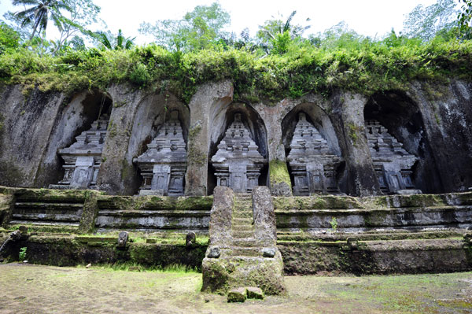

Gunung Kawi Bali
Sejarah Gunung Kawi Bali
Gunung Kawi merupakan salah satu cagar budaya dan objek wisata di Bali. Bangunan di Gunung Kawi Bali, merupakan bangunan candi yang di bangun pada abad ke 11. Lokasinya berada di didekat sungai Pakerisan, di wilayah Tampak Siring yang berada di timur laut tempat wisata Ubud.
Di Gunung Kawi, terdapat candi yang dipahat di tebing batu di ketinggian 7 meter dengan jumlah 10 candi. Dulunya fungsi dari candi ini adalah tempat untuk pemujaan raja Udayana. Penafsiran akan fungsi candi ini, berdasarkan sebuah prasasti yang di temukan di tempat wisata ini.
Terdapat tiga kelompok candi di tempat wisata Gunung Kawi, yaitu kelompok candi Lima. Disebut candi lima, karena terdapat lima candi terpahat di tebing bagian timur dan kelima candi menghadap ke barat. Candi Lima didedikasikan untuk raja Udayana dan Anak Wungsu beserta keluarganya. Kelompok yang kedua bernama candi empat, letaknya di bagian barat dari tempat wisata Gunung Kawi. Candi empat didedikasikan untuk selir dari Anak Wungsu. Sedangkan di bagian barat daya terdapat 1 candi atau candi yang kesepuluh. Candi yang ke sepuluh ini di dedikasikan untuk perdana menteri yang menjabad pada pemeritahan Anak Wungsu.
Wisata Tempat Purbakala Di Ubud
Pulau Bali memiliki banyak lokasi untuk wisata tempat purbakala, seperti Kerta Gosa Bali, Goa Gajah, pura Besakih Bali. Peminat terbanyak untuk wisata ke tempat purbakala adalah wisatawan asing. Karena itu banyak sekali tersedia jasa paket tour murah di Bali yang menawarkan rute wisata ke tempat purbakala. Salah satu contoh adalah paket tour Ubud. Jalan-jalan ke Bali tidak selalu mahal, untuk dapat jalan jalan murah ke Bali ada berbagai cara. Salah satunya adalah menggunakan jasa sewa mobil dengan supir di Bali.